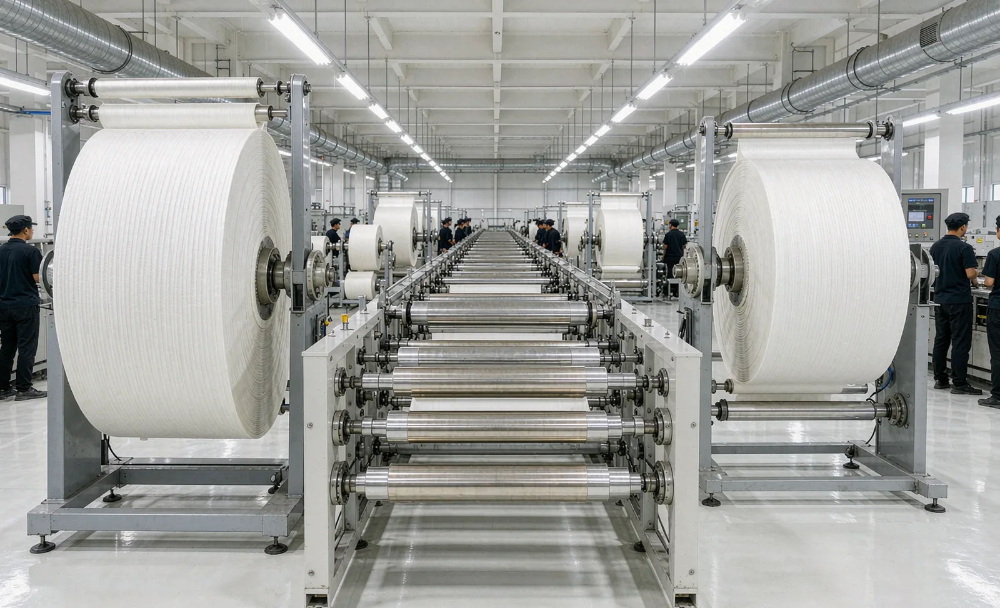
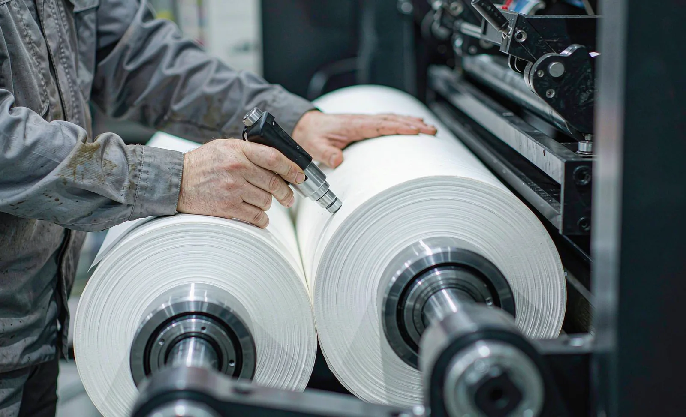

Published November 15, 2026 | By HDPTH Technical Editorial Team

Few roll defects are as consistently misattributed as the gauge band. When a customer rejects a roll for a hard ring, a ridge on the face or an edge that has telescoped, the first assumption is usually a mis-set rewinding machine — and sometimes it is. But a hard lane can only form where the material itself varies in thickness: a lane wound from a thicker strip gains diameter faster than its neighbours, accumulates proportionally more winding stress, and converts both into density and hardness. The machine did not create the caliper variation — it inherited it, and then either spread its consequences evenly or concentrated them. A buyer who understands that split can specify and negotiate on evidence instead of blame.
What a gauge band is and where the thickness comes from
A gauge band is a band of increased hardness and density running through a wound roll, usually matching one or more slit lanes. Its root cause is cross-direction caliper variation — thickness that differs across the width of the web. On nonwoven lines it comes from uneven fibre deposition, basis-weight stripes from carding or spinning, or calender nip variation; on film lines, from die lines in extrusion; on coated webs, coating weight variation adds a further layer. The variation is often only a few microns, but its effect compounds: a lane two percent thicker than its neighbours finishes a full roll a couple of millimetres larger in diameter, and that difference has to go somewhere as the roll is wound under tension.
Buyers should also know the related vocabulary, because suppliers use it loosely. “Hard lane,” “hard band” and “ridging” describe the wound result; “caliper profile” or “thickness profile” describes the measurement of the parent web. Note that “profile” also appears in “taper tension profile,” an unrelated term for how the tension setpoint decreases with roll diameter. When specifying, name the measurement explicitly: a cross-direction thickness profile with values, positions and units — not the word “profile” on its own.
How thickness variation becomes roll defects
The mechanics are simple enough to predict lane by lane. Every revolution lays one layer of that lane’s actual thickness onto the roll, so a thicker lane gains radius faster than its neighbours. Under a common tension system it also carries more force per unit width, and the lay-on nip presses it harder against the growing roll. The result is a band that winds tighter than the surrounding material — denser, harder, with more stored strain. The consequences appear in three familiar ways. A hard lane shows on the roll face, sometimes with a ridge that deepens with diameter. A starred or crushed core end develops when the tight band’s stress has nowhere to go at the core. Edge telescoping follows when the thick strip runs along one slit edge and walks the roll sideways. Each has been blamed on tension settings or operator error — and each has a caliper profile as its hidden input.
The lane count matters more than buyers expect. The same parent roll slit into twenty-four narrow lanes guarantees that some lane will sit fully inside a thick stripe, and that lane will go hard every time — which is why converters of narrow nonwoven and film products see gauge-band complaints that wider-web producers never do, and why a machine comfortable with a two-lane pattern may need a different winding architecture for many lanes on the same material.
Winding architecture choices for uneven caliper profiles
Because the thickness profile cannot be removed, the winding architecture decides how its consequences are distributed. Center winding, where each roll is driven through its own core, gives every lane the same torque history regardless of thickness — the arrangement most sensitive to caliper variation. Surface winding, where the roll is driven by contact against a driven roll, evens out some differences naturally, which is why surface and center-surface combinations are common on denser nonwoven products. Differential rewind shafts go further, letting each slit roll slip against the common shaft: a lane winding larger than its neighbours does not have to fight them for torque, it slips and holds its own tension. For many-up patterns on webs with known caliper stripes, differential winding is usually what keeps lane-to-lane hardness acceptable without constant operator intervention.
Tension and nip strategy complete the picture. Taper tension, stepping the setpoint down as diameter grows, prevents the outer layers of the thick lane from being wound tighter still. A calibrated, adjustable lay-on nip prevents the machine from amplifying the thickness difference into a density difference; a nip that loads unevenly across the width does the opposite. None of these controls remove the caliper profile — they decide whether its consequences are spread across the roll or concentrated into a defect a customer will find.

Specifying the machine around your material’s profile
The specification step most buyers skip is measuring and sharing the parent roll’s actual thickness profile. A nominal thickness with a symmetrical tolerance tells the supplier nothing about where the variation sits or how sharp it is — and the machine’s behaviour depends on exactly that. The useful data set is short: a measured cross-direction caliper profile of a representative parent roll, the position and height of the worst stripes, parent and finished roll diameters, lane count and widths, core size, GSM range, and the winding method and defect history of the machine in service today. With those inputs, a competent supplier can predict which lanes will go hard on which winding architecture, and state in the quotation how tension, nip and shaft slip will be configured for your pattern.
The specification should also fix the boundaries honestly. State the caliper profile the machine is expected to handle: a guarantee written against a perfectly uniform web is worthless, because no web is perfectly uniform. Conversely, do not ask the rewinding machine to compensate for a parent roll whose stripes are visible to the eye — that material needs upstream correction. The practical middle ground is a machine guaranteed to produce acceptable lane hardness on a stated profile, with the profile measurement method named so both parties measure the same thing. This one clause prevents most gauge-band disputes that surface after delivery.
Proving gauge-band control at the FAT
Gauge-band behaviour is testable, and the test belongs in the factory acceptance protocol rather than in the first month of production. The core method is lane-by-lane roll hardness measurement: wind full-diameter rolls of the buyer’s own material at production speed and diameter, then measure hardness across every lane with a defined instrument — a Billy Pencil-type device or flat-anvil hardness meter at fixed positions. Record the lane-to-lane hardness difference and the profile within each lane, add a visual inspection for ridges, and measure telescoping after the buyer’s normal conditioning period. Acceptance figures should come from the buyer’s own quality records — what hardness spread has run acceptably downstream — not from a round number invented at the FAT. One further clause matters: the parent rolls used for the FAT should carry the buyer’s real caliper profile, including the worst documented stripes, because a run on hand-picked uniform rolls proves nothing about Monday’s production.
Two related guides deepen this picture: Slitter Rewinder Roll Hardness Testing: How to Set Acceptance Criteria covers the hardness instruments and profile methods this FAT clause relies on, and When to Specify Differential Rewind Shafts on a Slitter Rewinder explains when slip-type shafts are worth their cost for lane-to-lane thickness variation. To see these controls applied across a machine range, review the High-Speed Slitting Machines product page.
Seeing Hard Lanes or Ridges in Your Finished Rolls?
Send HDPTH your material, the measured caliper profile of your parent rolls and your lane pattern. Our application engineers will identify the winding architecture, taper tension and nip configuration that keeps lane hardness within your acceptance limits — and build a lane-by-lane hardness test into the FAT protocol before you order.
Submit Your Project InquiryBuyer FAQs
What is a gauge band on a slit roll?
A hard band running through a finished roll, caused by a lane of web thicker than its neighbours. Every turn of that lane adds more material than adjacent lanes, so the band grows in diameter faster, carries more winding stress and ends up denser and harder than the rest of the roll.
Can a slitter rewinder fix thickness variation in the parent roll?
No machine can add or remove material, so the caliper profile is set upstream. A well-specified slitter rewinder manages the consequences: taper tension, calibrated nip pressure, the right winding architecture and differential slip distribute winding stress so the existing variation does not concentrate into hard lanes, ridges or telescoping.
Which winding method handles gauge bands best?
It depends on lane count and the size of the variation. Center winding tolerates lane differences least because every roll is torque-locked to the same speed. Surface winding evens out some differences through the drive roll. Differential rewind shafts let each slit roll slip against a common shaft and hold its own tension — the usual choice for many-up, variable-caliper webs.
What thickness profile data should I send the supplier with an RFQ?
A measured cross-direction caliper profile of the actual parent roll, not just a nominal thickness with a tolerance. Include the location and height of the worst bands, parent and finished roll diameters, lane count, core size, GSM range and the winding method in use today. With that data the supplier can predict which lanes will go hard and configure tension, nip and shaft slip accordingly.
How is gauge-band behaviour tested at the factory acceptance test?
Wind full-diameter rolls of the buyer’s own material at production speed, then measure roll hardness across every lane — for example with a Billy Pencil-type device — and record lane-to-lane differences. Add a visual inspection for ridges and a telescoping measurement after conditioning. The recorded hardness profile and defect map belong in the FAT report as acceptance data.